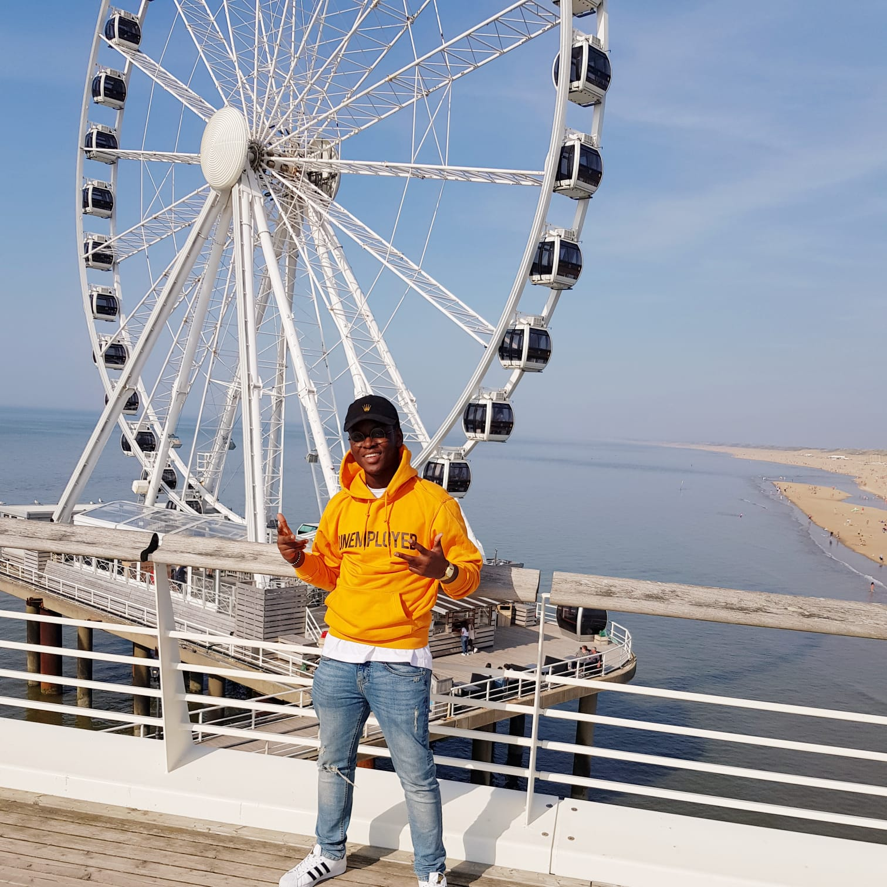
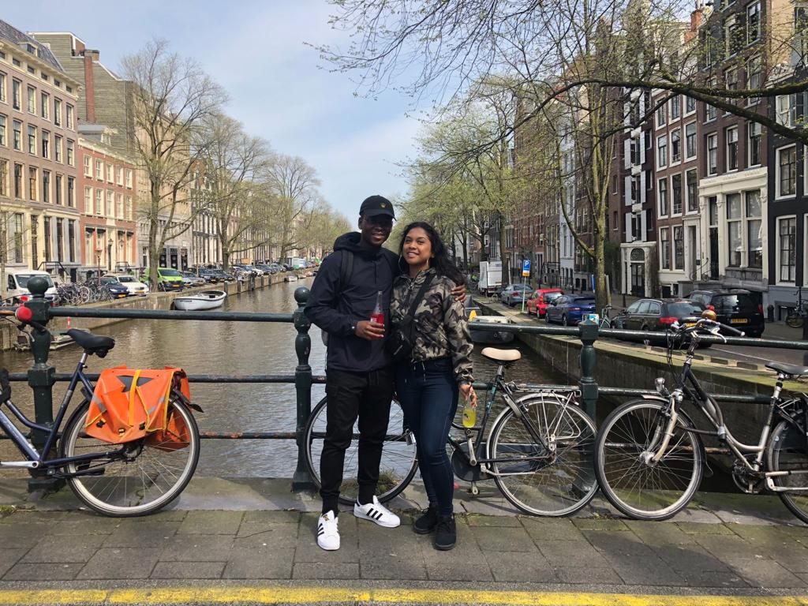
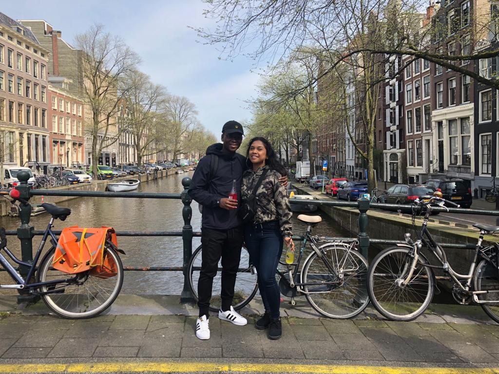
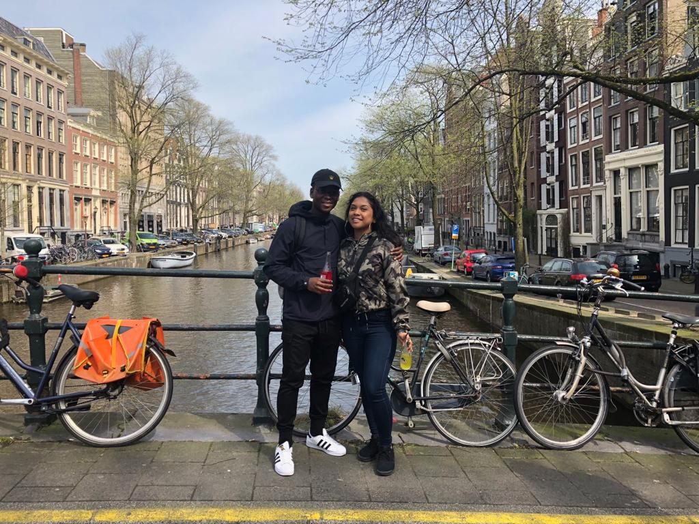

Welkom op mijn portfolio pagina!
Mijn naam is Randy Ofosu. Ik doe nu een opleiding bij het ROC Amstelland als je raadt het wel. Applicatie ontwikkelaar. Ik ben niet alleen een beginnend codeur. Maar ik speel ook de gitaar. Echter zit veel van mijn digitale kennis in mijn Digital Audio Workstation Fruity Loops. Hier heb ik geleerd dat dit soort werk het best bij mij past. Ik kan uren zitten achter de laptop zonder te weten en pas bij mijn ontwaking van mijn dagdroom merken dat het avond is. Ik ben een perfectionist maar krijg graag dingen af. Hiernaast ben ik een geboren ondernemer dus marketing en psychologie zit er helemaal in bij mij.


 

